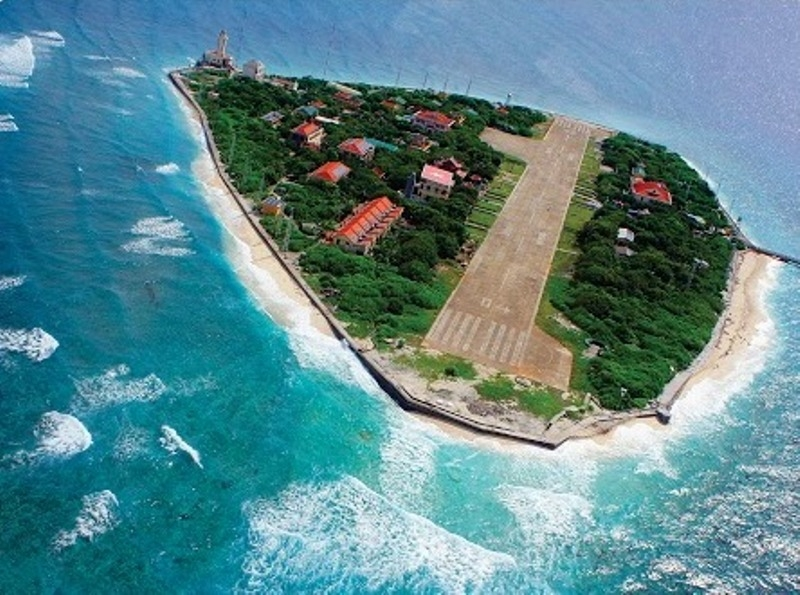

Biển đảo việt nam

Sáng 8/9, tại thành phố Hải Phòng, Ban Tuyên giáo Thành ủy Hải Phòng tổ chức hội nghị tổng kết và trao giải
cuộc thi trực tuyến “Biển, đảo Việt Nam: Hải Phòng vươn ra biển lớn”.
Dự hội nghị có đồng chí Đỗ Mạnh Hiến, Phó Bí thư Thường trực Thành ủy Hải Phòng; đồng chí Đào Khánh Hà, Trưởng ban Tuyên giáo
Thành ủy Hải Phòng, đại diện lãnh đạo một số các ban, ngành Trung ương và TP Hà Nội cùng các tác giả đoạt
giải của cuộc thi và đông đảo các thí sinh tham gia cuộc thi.
Báo cáo tại cuộc thi, đồng chí Đào Văn Hoàn, Phó Trưởng ban Tuyên giáo Thành ủy Hải Phòng cho biết, nhằm nâng cao nhận thức
của cán bộ, đảng viên và các tầng lớp nhân dân về vị trí, vai trò của biển, đảo trong sự nghiệp xây dựng và bảo vệ Tổ quốc; khơi dậy, bồi dưỡng tinh thần yêu nước, lòng tự hào dân tộc, ý thức chủ quyền, toàn vẹn lãnh thổ, Ban Tuyên giáo Thành ủy Hải Phòng phối hợp tổ chức cuộc thi trực tuyến “Biển, đảo Việt Nam: Hải Phòng vươn ra biển lớn”.
Cuộc thi được tổ chức từ ngày 26/3 đến hết tháng 6/2022 theo hình thức trực tuyến tại địa chỉ website https://biendao
.tuyengiaohaiphong.vn.
Đồng chí Đỗ Mạnh Hiến, Phó Bí thư Thường trực Thành ủy và đồng chí Đào Khánh Hà, Trưởng Ban Tuyên giáo Thành ủy trao Kỷ niệm
chương và Giấy chứng nhận cho các tập thể đạt giải cuộc thi.
Tính đến hết 30/6, Cuộc thi đã thu hút 190.018 người tham gia dự thi, nhận được sự hưởng ứng, tham gia của các địa phương
trong cả nước, trong đó một số địa phương có số người tham gia thi đông đảo như: Hà Nội (81.476 người), Đà Nẵng (5.961 người), Long An (2.619 người), Sóc Trăng (2.430 người)…
Đặc biệt, tại Hải Phòng, có 15/15 quận, huyện và các đơn vị sở, ngành đã thu hút 88.436 người tham gia thi. “Nổi bật như:
quận Hải An (49.017 người); quận Lê Chân (16.022 người); huyện Tiên Lãng (4.880 người); quận Ngô Quyền
(4.848 người)…